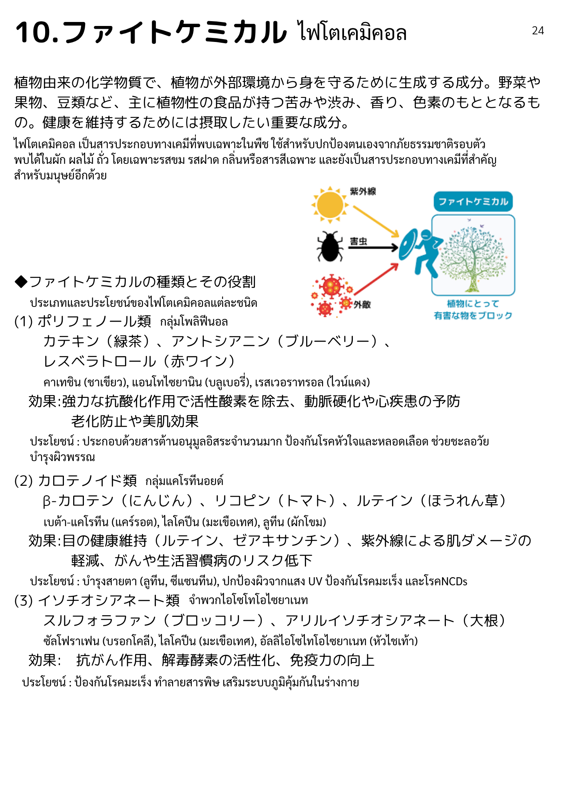
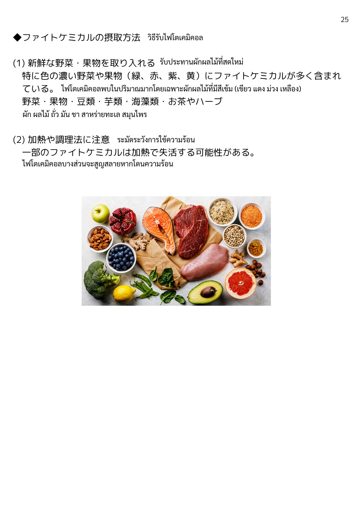

| 漢字 | ひらがな | ความหมาย (ไทย) |
|---|---|---|
| ファイトケミカル | ふぁいとけみかる | ไฟโตเคมิคอล (สารพฤกษเคมี) |
| 植物由来 | しょくぶつゆらい | มาจากพืช |
| 化学物質 | かがくぶっしつ | สารเคมี |
| 植物 | しょくぶつ | พืช |
| 外部 | がいぶ | ภายนอก |
| 環境 | かんきょう | สภาพแวดล้อม |
| 身を守る | みをまもる | ป้องกันตัวเอง |
| 生成 | せいせい | การสร้าง / ผลิต |
| 成分 | せいぶん | ส่วนประกอบ / สาร |
| 野菜 | やさい | ผัก |
| 果物 | くだもの | ผลไม้ |
| 豆類 | まめるい | ถั่ว (ประเภทถั่ว) |
| 食品 | しょくひん | อาหาร |
| 苦み | にがみ | รสขม |
| 渋み | しぶみ | รสฝาด |
| 香り | かおり | กลิ่นหอม |
| 色素 | しきそ | เม็ดสี / สีในธรรมชาติ |
| 漢字 | ひらがな | ความหมาย (ไทย) |
|---|---|---|
| 補助的 | ほじょてき | เสริม / ช่วยเหลือ |
| 役割 | やくわり | บทบาท / หน้าที่ |
| 体内 | たいない | ภายในร่างกาย |
| 合成 | ごうせい | การสังเคราะห์ |
| 摂取 | せっしゅ | การบริโภค |
| 必要 | ひつよう | จำเป็น |
| 維持 | いじ | การคงไว้ / รักษา |
| 健康 | けんこう | สุขภาพ |
| 漢字 | ひらがな | ความหมาย (ไทย) |
|---|---|---|
| 種類 | しゅるい | ชนิด / ประเภท |
| ポリフェノール類 | ぽりふぇのーるるい | กลุ่มโพลีฟีนอล |
| カテキン | かてきん | คาเทชิน |
| 緑茶 | りょくちゃ | ชาเขียว |
| アントシアニン | あんとしあにん | แอนโทไซยานิน |
| ブルーベリー | ぶるーべりー | บลูเบอร์รี่ |
| レスベラトロール | れすべらとろーる | เรสเวอราทรอล |
| 赤ワイン | あかわいん | ไวน์แดง |
| カロテノイド類 | かろてのいどるい | กลุ่มแคโรทีนอยด์ |
| β-カロテン | べーたかろてん | เบต้าแคโรทีน |
| 人参 | にんじん | แครอท |
| リコピン | りこぴん | ไลโคปีน |
| トマト | とまと | มะเขือเทศ |
| ルテイン | るていん | ลูทีน |
| ほうれん草 | ほうれんそう | ผักโขม |
| ゼアキサンチン | ぜあきさんちん | ซีแซนทีน |
| イソチオシアネート類 | いそちおしあねーとるい | กลุ่มไอโซไทโอไซยาเนต |
| スルフォラファン | するふぉらふぁん | ซัลโฟราเฟน |
| ブロッコリー | ぶろっこりー | บรอกโคลี |
| アリルイソチオシアネート | ありるいそちおしあねーと | อัลลิลไอโซไทโอไซยาเนต |
| 大根 | だいこん | หัวไชเท้า |
| 漢字 | ひらがな | ความหมาย (ไทย) |
|---|---|---|
| 効果 | こうか | ผล / ประสิทธิภาพ |
| 強力 | きょうりょく | ทรงพลัง / รุนแรง |
| 抗酸化作用 | こうさんかさよう | ฤทธิ์ต้านอนุมูลอิสระ |
| 活性酸素 | かっせいさんそ | อนุมูลอิสระ |
| 除去 | じょきょ | การกำจัด |
| 動脈硬化 | どうみゃくこうか | หลอดเลือดแดงแข็ง |
| 心疾患 | しんしっかん | โรคหัวใจ |
| 予防 | よぼう | การป้องกัน |
| 老化防止 | ろうかぼうし | การป้องกันการแก่ชรา |
| 美肌効果 | びはだこうか | ผลบำรุงผิว |
| 目の健康維持 | めのけんこういじ | การรักษาสุขภาพดวงตา |
| 紫外線 | しがいせん | รังสียูวี (UV) |
| 肌 | はだ | ผิว |
| ダメージ | だめーじ | ความเสียหาย |
| 軽減 | けいげん | การลดลง / บรรเทา |
| 抗がん作用 | こうがんさよう | ฤทธิ์ต้านมะเร็ง |
| 解毒酵素 | げどくこうそ | เอนไซม์ขจัดสารพิษ |
| 活性化 | かっせいか | การกระตุ้น / เปิดการทำงาน |
| 免疫力 | めんえきりょく | ภูมิคุ้มกัน |
| 向上 | こうじょう | การเพิ่มขึ้น / พัฒนา |
| 血流改善 | けつりゅうかいぜん | การปรับปรุงการไหลเวียนเลือด |
| 漢字 | ひらがな | ความหมาย (ไทย) |
|---|---|---|
| 脳卒中 | のうそっちゅう | โรคหลอดเลือดสมอง / สโตรก |
| がん | がん | มะเร็ง |
| 生活習慣病 | せいかつしゅうかんびょう | โรคจากพฤติกรรม/ไลฟ์สไตล์ |
| NCDs | えぬしーでぃーず | โรคไม่ติดต่อเรื้อรัง |
| リスク低下 | りすくていか | การลดความเสี่ยง |
| 毒素 | どくそ | สารพิษ |
| 解毒 | げどく | การขจัดสารพิษ |
| 心血管疾患 | しんけっかんしっかん | โรคหัวใจและหลอดเลือด |
| 漢字 | ひらがな | ความหมาย (ไทย) |
|---|---|---|
| 摂取方法 | せっしゅほうほう | วิธีบริโภค |
| 新鮮 | しんせん | สด / สดใหม่ |
| 取り入れる | とりいれる | นำเข้ามา / รับเข้า |
| 色の濃い | いろのこい | สีเข้ม |
| 緑 | みどり | สีเขียว |
| 赤 | あか | สีแดง |
| 紫 | むらさき | สีม่วง |
| 黄 | き | สีเหลือง |
| 多く | おおく | มาก / เยอะ |
| 含まれる | ふくまれる | มีอยู่ใน / ประกอบด้วย |
| 芋類 | いもるい | มันชนิดต่าง ๆ |
| 海藻類 | かいそうるい | สาหร่าย |
| お茶 | おちゃ | ชา |
| ハーブ | はーぶ | สมุนไพร |
| 漢字 | ひらがな | ความหมาย (ไทย) |
|---|---|---|
| 加熱 | かねつ | การให้ความร้อน |
| 調理法 | ちょうりほう | วิธีปรุงอาหาร |
| 注意 | ちゅうい | ระมัดระวัง / ข้อระวัง |
| 一部 | いちぶ | ส่วนหนึ่ง / บางส่วน |
| 失活 | しっかつ | สูญเสียการทำงาน / สลายฤทธิ์ |
| 可能性 | かのうせい | ความเป็นไปได้ |